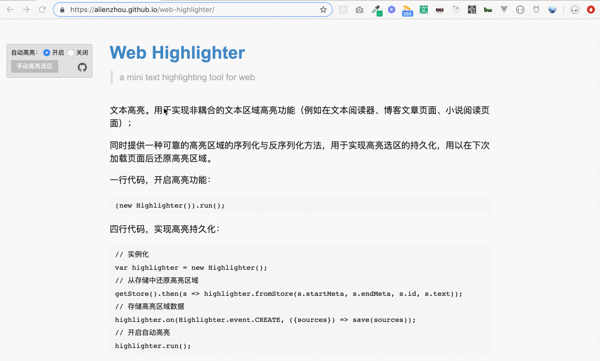
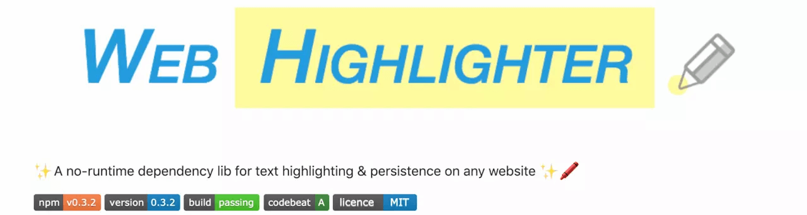
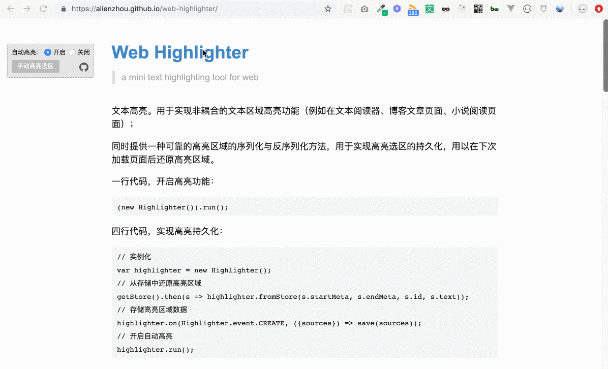
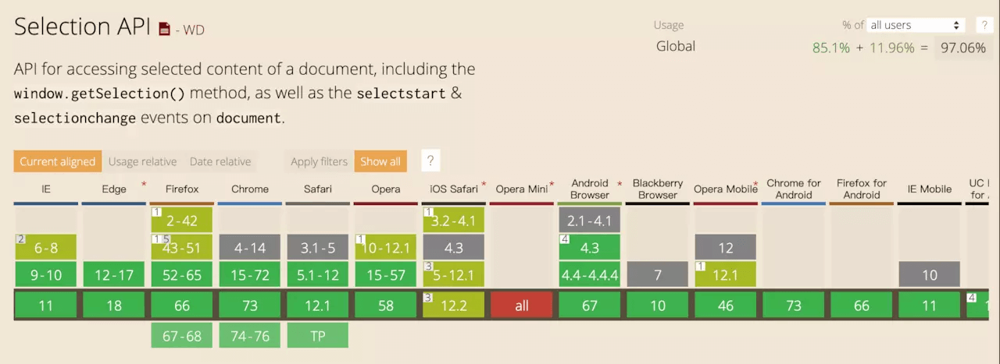

今天带大家一起来看看下，如何实现“划词高亮”功能。
笔者前段时间为线上业务实现了一个与内容结构非耦合的文本高亮在线笔记功能。非耦合是指不需要为高亮功能建立特殊的页面 DOM 结构，而高亮功能对业务近乎透明。该功能核心部分具有较强的通用性与移植性，故拿出来和大家分享交流一下。
# 1. 什么是“划词高亮”？
有些同学可能不太清楚“划词高亮”是指什么，下面就是一个典型的“划词高亮”：

上图的示例网站可以点击这里访问。用户选择一段文本（即划词），即会自动将这段选取的文本添加高亮背景，用户可以很方便地为网页添加在线笔记。
本文具体的核心代码已封装成独立库 web-highlighter (opens new window)，阅读中如有疑问可参考其中代码↓↓。 
# 2. 实现“划词高亮”需要解决哪些问题？
实现一个“划词高亮”的在线笔记功能需要解决的核心问题有两个：
- 加高亮背景。即如何根据用户在网页上的选取，为相应的文本添加高亮背景；
- 高亮区域的持久化与还原。即如何保存用户高亮信息，并在下次浏览时准确还原，否则下次打开页面用户高亮的信息就丢失了。
一般来说，划词高亮的业务需求方主要是针对自己产出的内容，你可以比较容易对内容在网页上的排版、HTML 标签等方面进行控制。这种情况下，处理高亮需求会更方便一些，毕竟自己可以根据高亮需求调整现有内容的 HTML。
而笔者面对的情况是，页面 HTML 排版结构复杂，且无法根据高亮需求来推动业务改动 HTML。这也催生出了对解决方案更通用化的要求，目标就是：针对任意内容均可“划词高亮”并支持后续访问时还原高亮状态，而不用去关心内容的组织结构。
下面就来具体说说，如何解决上面的两个核心问题。
# 3. 如何“加高亮背景”？
根据动图演示我们可以知道，用户选择某一段文本（下文称为“用户选区”）后，我们会给这段文本加一个高亮背景。

例如用户选择了上图中的文本（即蓝色部分）。为其加高亮的基本思路如下：
- 获取选中的文本节点：通过用户选择的区域信息，获取所有被选中的所有文本节点；
- 为文本节点添加背景色：给这些文本节点包裹一层新的元素，该元素具有指定的背景颜色。
# 3.1. 如何获取选中的文本节点？
# 1）Selection API
需要基于浏览器为我们提供的 Selection API 。它的兼容性还不错。如果要支持更低版本的浏览器则需要用 polyfill。

Selection API 可以返回一系列关于用户选区的信息。那么是不是可以通过它直接获取选取中的所有 DOM 元素呢？
很遗憾并不能。但好在它可以返回选区的首尾节点信息：
const range = window.getSelection().getRangeAt(0);
const start = {
node: range.startContainer,
offset: range.startOffset
};
const end = {
node: range.endContainer,
offset: range.endOffset
};
Range 对象包含了选区的开始与结束信息，其中包括节点（node）与文本偏移量（offset）。节点信息不用多说，这里解释一下 offset 是指什么：例如，标签 <p>这是一段文本的示例</p>，用户选取的部分是“一段文本”这四个字，这时首尾的 node 均为 p 元素内的文本节点（Text Node），而 startOffset 和 endOffset 分别为 2 和 6。
# 2）首尾文本节点拆分
理解了 offset 的概念后，自然就发现有个问题需要解决。由于用户选区（selection）可能只包含一个文本节点的一部分（即 offset 不为 0），所以我们最后得到的用户选区所包含的节点里，也只希望有首尾文本节点的这“一部分”。对此，我们可以使用 .splitText() 拆分文本节点：
// 首节点
if (curNode === $startNode) {
if (curNode.nodeType === 3) {
curNode.splitText(startOffset);
const node = curNode.nextSibling;
selectedNodes.push(node);
}
}
// 尾节点
if (curNode === $endNode) {
if (curNode.nodeType === 3) {
const node = curNode;
node.splitText(endOffset);
selectedNodes.push(node);
}
}
以上代码会依据 offset 对文本节点进行拆分。对于开始节点，只需要收集它的后半部分；而对于结束节点则是前半部分。
# 3）遍历 DOM 树
到目前为止，我们准确找到了首尾节点，所以下一步就是找出“中间”所有的文本节点。这就需要遍历 DOM 树。
“中间”加上引号是因为，在视觉上这些节点是位于首尾之间的，但由于 DOM 不是线性结构而是树形结构，所以这个“中间”换成程序语言，就是指深度优先遍历时，位于首尾两节点之间的所有文本节点。DFS 的方法有很多，可以递归，也可以用栈+循环，这里就不赘述了。
需要提一下的是，由于我们是要为文本节点添加高亮背景，因此在遍历时只会收集文本节点。
if (curNode.nodeType === 3) {
selectedNodes.push(curNode);
}
# 3.2. 如何为文本节点添加背景色？
这一步本身并不困难。在上一步的基础上，我们已经选出了所有被用户选中的 文本节点（包括拆分后的首尾节点）。对此，一个最直接的方法就是为其“包裹上”一个带背景样式的元素。
具体的，我们可以给每个文本节点外加上一个 class 为 highlight 的 <span> 元素；而背景样式则通过 CSS .highlight 选择器设置。
// 使用上一步中封装的方法获取选区内的文本节点
const nodes = getSelectedNodes(start, end);
nodes.forEach(node => {
const wrap = document.createElement('span');
wrap.setAttribute('class', 'highlight');
wrap.appendChild(node.cloneNode(false));
node.parentNode.replaceChild(wrap);
});
.highlight {
background: #ff9;
}
这样就可以给被选中的文字添加一个“永久”的高亮背景了。
# p.s. 选区的重合问题
然而，文本高亮里还有一个比较棘手的需求 —— 高亮区域的重合。举个例子，最开始的演示图（下图）里，第一个高亮区域和第二个高亮区域之间存在重叠部分，即“本区域高”四个字。
这个问题目前来看似乎还不是问题，但在结合下面要提到的一些功能与需求时，就会变成非常麻烦，甚至无法正常运行（一些开源库这块处理也不尽如人意，这也是没有选择它们的一个原因）。这里简单提一下，具体的情况我会放到后续对应的地方再详细说。
# 4. 如何实现高亮选区的持久化与还原？
到目前我们已经可以给选中的文本添加高亮背景了。但还有一个大问题：
想象一下，用户辛辛苦苦划了很多重点（高亮），开心地退出页面后，下次访问时发现这些都不能保存时，该有多么得沮丧。因此，如果只是在页面上做“一次性”的文本高亮，那它的使用价值会大大降低。这也就促使我们的“划词高亮”功能要能够保存（持久化）这些高亮选区并正确还原。
持久化高亮选区的核心是找到一种合适的 DOM 节点序列化方法。
通过第三部分可以知道，当确定了首尾节点与文本偏移（offset）信息后，即可为其间文本节点添加背景色。其中，offset 是数值类型，要在服务器保存它自然没有问题；但是 DOM 节点不同，在浏览器中保存它只需要赋值给一个变量，但想在后端保存所谓的 DOM 则不那么直接了。
# 4.1 序列化 DOM 节点标识
所以这里的核心点就是找到一种方法，能够定位 DOM 节点，同时可以被保存成普通的 JSON Object，用以传给后端保存，这个过程在本文中被称为 DOM 标识 的“序列化”。而下次用户访问时，又可以从后端取回，然后“反序列化”为对应的 DOM 节点。
有几种常见的方式来标识 DOM 节点：
- 使用 xPath
- 使用 CSS Selector 语法
- 使用 tagName + index
这里选择了使用第三种方式来快速实现。需要注意一点，我们通过 Selection API 取到的首尾节点一般是文本节点，而这里要记录的 tagName 和 index 都是该文本节点的父元素节点（Element Node）的，而 childIndex 表示该文本节点是其父亲的第几个儿子：
function serialize(textNode, root = document) {
const node = textNode.parentElement;
let childIndex = -1;
for (let i = 0; i < node.childNodes.length; i++) {
if (textNode === node.childNodes[i]) {
childIndex = i;
break;
}
}
const tagName = node.tagName;
const list = root.getElementsByTagName(tagName);
for (let index = 0; index < list.length; index++) {
if (node === list[index]) {
return {tagName, index, childIndex};
}
}
return {tagName, index: -1, childIndex};
}
通过该方法返回的信息，再加上 offset 信息，即定位选取的起始位置，同时也完全可发送给后端进行保存了。
# 4.2 反序列化 DOM 节点
基于上一节的序列化方法，从后端获取到数据后，可以很容易反序列化为 DOM 节点：
function deSerialize(meta, root = document) {
const {tagName, index, childIndex} = meta;
const parent = root.getElementsByTagName(tagName)[index];
return parent.childNodes[childIndex];
}
至此，我们大体已经解决了两个核心问题，这似乎已经是一个可用版本了。但其实不然，根据实践经验，如果仅仅是上面这些处理，往往是无法应对实际需求的，存在一些“致命问题”。
但不用灰心，下面会具体来说说所谓的“致命问题”是什么，而又是如何解决并实现一个线上业务可用的通用“划词高亮”功能的。
# 5. 如何实现一个生产环境可用的“划词高亮”？
# 1）上面的方案有什么问题？
首先来看看上面的方案会有什么问题。
当我们需要高亮文本时，会为文本节点包裹 span元素，这就改动了页面的 DOM 结构。它可能会导致后续高亮的首尾节点与其 offset 信息其实是基于被改动后的 DOM 结构的。带来的结果有两个：
- 下次访问时，程序必须按上次用户高亮的顺序还原。
- 用户不能随意取消（删除）高亮区域，只能按添加顺序从后往前删。
否则，就会有部分的高亮选区在还原时无法定位到正确的元素。
文字可能不好理解，下面我举个例子来直观解释下这个问题。
<p>
非常高兴今天能够在这里和大家分享一下文本高亮（在线笔记）的实现方式。
</p>
对于上面这段 HTML，用户分别按顺序高亮了两个部分：“高兴”和“文本高亮”。那么按照上面的实现方式，这段 HTML 变成了下面这样：
<p>
非常
<span class="highlight">高兴</span>
今天能够在这里和大家分享一下
<span class="highlight">文本高亮</span>
（在线笔记）的实现方式。
</p>
对应的两个序列化数据分别为：
// “高兴”两个字被高亮时获取的序列化信息
{
start: {
tagName: 'p',
index: 0,
childIndex: 0,
offset: 2
},
end: {
tagName: 'p',
index: 0,
childIndex: 0,
offset: 4
}
}
// “文本高亮”四个字被高亮时获取的序列化信息。
// 这时候由于p下面已经存在了一个高亮信息（即“高兴”）。
// 所以其内部 HTML 结构已被修改，直观来说就是 childNodes 改变了。
// 进而，childIndex属性由于前一个 span 元素的加入，变为了 2。
{
start: {
tagName: 'p',
index: 0,
childIndex: 2,
offset: 14
},
end: {
tagName: 'p',
index: 0,
childIndex: 2,
offset: 18
}
}
可以看到，“文本高亮”这四个字的首尾节点的 childIndex 都被记为 2，这是由于前一个高亮区域改变了 <p>元素下的DOM结构。如果此时“高兴”选区的高亮被用户取消，那么下次再访问页面就无法还原高亮了 —— “高兴”选区的高亮被取消了，<p>下自然就不会出现第三个 childNode，那么 childIndex 为 2 就找不到对应的节点了。这就导致存储的数据在还原高亮选区时出现问题。
此外，还记得在第三部分末尾提到的高亮选取重合问题么？支持选取重合很容易出现如下的包裹元素嵌套情况：
<p>
非常
<span class="highlight">高兴</span>
今天能够在这里和大家分享一下
<span class="highlight">
文本
<span class="highlight">高亮</span>
</span>
（在线笔记）的实现方式。
</p>
这也使得某个文本区域经过多次高亮、取消高亮后，会出现与原 HTML 页面不同的复杂嵌套结构。可以预见，当我们使用 xpath 或 CSS selector 作为 DOM 标识时，上面提到的问题也会出现，同时也使其他需求的实现更加复杂。
到这里可以提一下其他开源库或产品是如何处理选区重合问题的：
- 开源库 Rangy 有一个 Highlighter 模块可以实现文本高亮，但其对于选区重合的情况是将两个选区直接合并了，这是不合符我们业务需求的。
- 付费产品 Diigo 直接不允许选区的重合。
- Medium.com 是支持选区重合的，体验非常不错，这也是我们产品的目标。但它页面的内容区结构相较我面对的情况会更简单与更可控。
所以如何解决这些问题呢？
# 2）另一种序列化 / 反序列化方式
我会对第四部分提到的序列化方式进行改进。仍然记录文本节点的父节点 tagName 与 index，但不再记录文本节点在 childNodes 中的 index 与 offset，而是记录开始（结束）位置在整个父元素节点中的文本偏移量。
例如下面这段 HTML：
<p>
非常
<span class="highlight">高兴</span>
今天能够在这里和大家分享一下
<span class="highlight">文本高亮</span>
（在线笔记）的实现方式。
</p>
对于“文本高亮”这个高亮选区，之前用于标识文本起始位置的信息为 childIndex = 2, offset = 14。而现在变为 offset = 18（从 <p>元素下第一个文本“非”开始计算，经过18个字符后是“文”）。可以看出，这样表示的优点是，不管 <p>内部原有的文本节点被 <span>（包裹）节点如何分割，都不会影响高亮选区还原时的节点定位。
据此，在序列化时，我们需要一个方法来将文本节点内偏移量“翻译”为其对应的父节点内部的总体文本偏移量：
function getTextPreOffset(root, text) {
const nodeStack = [root];
let curNode = null;
let offset = 0;
while (curNode = nodeStack.pop()) {
const children = curNode.childNodes;
for (let i = children.length - 1; i >= 0; i--) {
nodeStack.push(children[i]);
}
if (curNode.nodeType === 3 && curNode !== text) {
offset += curNode.textContent.length;
}
else if (curNode.nodeType === 3) {
break;
}
}
return offset;
}
而还原高亮选区时，需要一个对应的逆过程：
function getTextChildByOffset(parent, offset) {
const nodeStack = [parent];
let curNode = null;
let curOffset = 0;
let startOffset = 0;
while (curNode = nodeStack.pop()) {
const children = curNode.childNodes;
for (let i = children.length - 1; i >= 0; i--) {
nodeStack.push(children[i]);
}
if (curNode.nodeType === 3) {
startOffset = offset - curOffset;
curOffset += curNode.textContent.length;
if (curOffset >= offset) {
break;
}
}
}
if (!curNode) {
curNode = parent;
}
return {node: curNode, offset: startOffset};
}
# 3）支持高亮选区的重合
重合的高亮选区带来的一个问题就是高亮包裹元素的嵌套，从而使得 DOM 结构会有较复杂的变动，增加了其他功能（交互）实现与问题排查的复杂度。因此，我在 3.2. 节提到的包裹高亮元素时，会再进行一些稍复杂的处理（尤其是重合选区），以保证尽量复用已有的包裹元素，避免元素的嵌套。
在处理时，将需要包裹的各个文本片段（Text Node）分为三类情况：
- 完全未被包裹，则直接包裹该部分。
- 属于被包裹过的文本节点的一部分，则使用
.splitText()将其拆分。 - 是一段完全被包裹的文本段，不需要对节点进行处理。
于此同时，为每个选区生成唯一 ID，将该段文本几点多对应的 ID、以及其由于选区重合所涉及到的其他 ID，都附加包裹元素上。因此像上面的第三种情况，不需要变更 DOM 结构，只用更新包裹元素两类 ID 所对应的 dataset 属性即可。
# 6. 其他问题
解决以上的一些问题后，“文本划词高亮”就基本可用了。还剩下一些“小修补”，简单提一下。
# 6.1. 高亮选区的交互事件，例如 click、hover
首先，可以为每个高亮选区生成一个唯一 ID，然后在该选区内所有的包裹元素上记录该 ID 信息，例如用 data-highlight-id属性。而对于选取重合的部分可以在 data-highlight-extra-id属性中记录重合的其他选区的 ID。
而监听到包裹元素的 click、hover 后，则触发 highlighter 的相应事件，并带上高亮 ID。
# 6.2. 取消高亮（高亮背景的删除）
由于在包裹时支持选区重合（对应会有上面提到的三种情况需要处理），因此，在删除选取高亮时，也会有三种情况需要分别处理：
- 直接删除包裹元素。即不存在选区重合。
- 更新
data-highlight-id属性和data-highlight-extra-id属性。即删除的高亮 ID 与data-highlight-id相同。 - 只更新
data-highlight-extra-id属性。即删除的高亮 ID 只在data-highlight-extra-id中。
# 6.3. 对于前端生成的动态页面怎么办？
不难发现，这种非耦合的文本高亮功能很依赖于页面的 DOM 结构，需要保证做高亮时的 DOM 结构和还原时的一致，否则无法正确还原出选区的起始节点位置。据此，对“划词”高亮最友好的应该是纯后端渲染的页面，在 onload监听中触发高亮选区还原的方法即可。但目前越来越多的页面（或页面的一部分）是前端动态生成的，针对这个问题该怎么处理呢？
我在实际工作中也遇到了类似问题 —— 页面的很多区域是 ajax 请求后前端渲染的。我的处理方式包括如下：
- 隔离变化范围。将上述代码中的“根节点”从
documentElement换为另一个更具体的容器元素。例如我面对的业务会在 id 为article-container的<div>内加载动态内容，那么我就会指定这个article-container为“根节点”。这样可以最大程度防止外部的 DOM 变动影响到高亮位置的定位，尤其是页面改版。 - 确定高亮选区的还原时机。由于内容可能是动态生成，所以需要等到该部分的 DOM 渲染完成后再调用还原方法。如果有暴露的监听事件可以在监听内处理；或者通过 MutationObserver 监听标志性元素来判断该部分是否加载完成。
- 记录业务内容信息，应对内容区改版。内容区的 DOM 结构更改算是“毁灭性打击”。如何确实有该类情况，可以尝试让业务内容展示方将段落信息等具体的内容信息绑定在 DOM 元素上，而我在高亮时取出这些信息来冗余存储，改版后可以通过这些内容信息“刷”一遍存储的数据。
# 6.4. 其他
篇幅问题，还有其他细节的问题就不在这篇文章里分享了。详细内容可以参考 web-highlighter 这个仓库里的实现。
# 7. 总结
本文先从“划词高亮”功能的两个核心问题（如何高亮用户选区的文本、如何将高亮选区还原）切入，基于 Selection API、深度优先遍历和 DOM 节点标识的序列化这些手段实现了“划词高亮”的核心功能。然而，该方案仍然存在一些实际问题，因此在第 5 部分进一步给出了相应的解决方案。
基于实际开发的经验，我发现解决上述几个“划词高亮”核心问题的代码具有一定通用性，因此把核心部分的源码封装成了独立的库 web-highlighter，托管在 github，也可以通过 npm 安装。
其已服务于线上产品业务，基本的高亮功能一行代码即可开启：
(new Highlighter()).run();
兼容IE 10/11、Edge、Firefox 52+、Chrome 15+、Safari 5.1+、Opera 15+。
感兴趣的小伙伴可以 star 一下。感谢支持，欢迎交流
文章来源：https://www.alienzhou.com/2019/04/21/web-note-highlight-in-js/